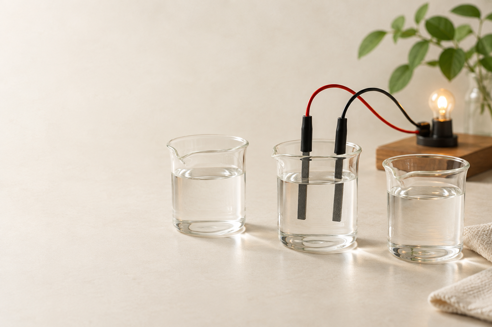

水溶液と
電流
豆電球の違いから、水の中を考える。

純水に、電流を流してみる
スイッチを 入れてみよう
豆電球は 点かない
純水は ほとんど流さない
スイッチを入れても、豆電球は点かない。
純水には、電流がほとんど流れない。
砂糖を溶かすと、どうなる？
砂糖を 溶かしてみよう
砂糖は 水に溶けた
スイッチを 入れると…
砂糖水も ほとんど流さない
純水に砂糖を溶かす。
同じ装置で、スイッチを入れる。
豆電球は、やはり点かない。
食塩を溶かすと、どうなる？
今度は 食塩を溶かす
食塩も 水に溶けた
豆電球が 点いた！
食塩水は 電流を流す
別の純水に、食塩を溶かす。
スイッチを入れると、点いた。
食塩水には、電流が流れる。
どんな物質を溶かすと、電流が流れる？
溶けたら 必ず流れる？
どちらも 溶けている
違いを 調べていこう
砂糖も食塩も、水に溶けた。
でも、豆電球の点き方は違った。
「流れた」「流れなかった」に分けよう
食塩は「流れた」側へ。
砂糖は「流れなかった」側へ。
塩化銅とエタノールでも調べる
塩化銅を溶かすと、豆電球が点く。
エタノールを混ぜても、点かない。
二つの結果を、分類に加えよう
塩化銅は、食塩と同じ側。
エタノールは、砂糖と同じ側。
この二つのなかまに、名前を付ける
水に溶かすと電流を流す物質を、電解質という。
水に溶かしても流さない物質を、非電解質という。
電流が流れたとき、水の中では？
水の中を 拡大してみよう
砂糖は 分子のまま
食塩は イオンに分かれる
砂糖水では、分子がそのまま広がる。
食塩水では、＋と−のイオンが動いている。
食塩が溶けるところを、拡大する
食塩の結晶 NaCl
結晶の中に Na⁺ と Cl⁻
水に溶けると 別々に動ける
NaCl → Na⁺ ＋ Cl⁻
結晶の中に、Na⁺ と Cl⁻ が並ぶ。
水の中で、離れて広がる。
NaCl → Na⁺ ＋ Cl⁻
イオンに分かれることを「電離」という
水に溶けると…
NaCl → Na⁺ ＋ Cl⁻
電離 NaCl → Na⁺ ＋ Cl⁻
物質が水に溶けて、イオンに分かれる。
この変化を「電離」という。
砂糖は溶けても、イオンに分かれない
砂糖が 溶けると…
分子のまま 広がる
溶けることと 電離は別
砂糖・エタノール 電離しない
砂糖は、分子のまま広がる。
＋と−のイオンには分かれない。
エタノールも、電離しない。
＋と−は、またくっつかないの？
＋と−なら 引き合うはず？
水分子が イオンを囲む
固定された壁ではなく 水分子も動く
＋と−は引き合うが、水分子も周りに集まる。
水に囲まれ、別々に動ける。
水が減ると、食塩の結晶ができる
水を減らすと どうなる？
水が 少なくなる
Na⁺ と Cl⁻が 結晶に並ぶ
水を蒸発させていく。
イオンが集まり、結晶に戻る。
動けるイオンが、水中で電気を運ぶ
イオンは どちらへ動く？
Na⁺ は−極へ Cl⁻ は＋極へ
水中の電流 イオンが電気を運ぶ
＋のイオンは−極へ、−のイオンは＋極へ。
イオンの移動によって、電流が流れる。
食塩の結晶のままなら、どうだろう？
イオンさえあれば 流れる？
結晶中では 動き回れない
食塩水では 動けるイオンがある
結晶では、イオンが決まった位置にある。
電流を運ぶには、イオンが動けることが必要。
塩化銅が溶けると、何に分かれる？
塩化銅 CuCl₂
銅イオン 塩化物イオン
Cu²⁺ 1個に Cl⁻ 2個
CuCl₂ → Cu²⁺ ＋ 2Cl⁻
結晶の中に、Cu²⁺ と Cl⁻ がある。
水に溶けると、別々に広がる。
CuCl₂ → Cu²⁺ ＋ 2Cl⁻
銅イオンが2個なら、塩化物イオンは？
Cl⁻ は 何個必要？
1 ： 2
2 ： 4
Cu²⁺ と Cl⁻ の個数比は、1：2。
Cu²⁺ が2個なら、Cl⁻ は4個。
塩化銅水溶液に、電流を流す
二つの電極を 観察しよう
陰極（−）に 赤褐色の物質
陽極（＋）から 気体の泡
陰極の表面に、赤褐色の物質が付いた。
陽極から、気体の泡が出た。
陰極には、銅が付着する
陰極（−）を 拡大する
銅イオン Cu²⁺
銅 Cu
陰極（−） 銅が付着
Cu²⁺ が、陰極へ向かう。
電極の表面で、銅になる。
赤褐色の銅が、付着していく。
陽極では、塩素が発生する
陽極（＋）を 拡大する
塩化物イオン Cl⁻
塩素 Cl₂
陽極（＋） 塩素が発生
Cl⁻ が、陽極へ向かう。
塩素分子 Cl₂ ができる。
塩素が、泡になって出てくる。
二つの電極で、変化が同時に進む
全体で 何が起きた？
陰極：銅 陽極：塩素
CuCl₂ → Cu ＋ Cl₂
陰極では銅が付着し、陽極では塩素が出る。
塩化銅 → 銅 ＋ 塩素
電離と、電気分解を区別する
どの段階で イオンになる？
電離 CuCl₂ → Cu²⁺ ＋ 2Cl⁻
電気分解 CuCl₂ → Cu ＋ Cl₂
水に溶かしたときに、電離する。
電流を流すと、電極で銅と塩素が生じる。
実験結果の表から、電解質を見つける
同じ装置で、水溶液を調べた結果
| 物質 | 水に溶けた | 豆電球 |
|---|---|---|
| A | ○ | 点いた |
| B | ○ | 点かなかった |
| C | ○ | 点いた |
電解質は どれだろう？
A・C 電解質
B 非電解質
AとCは、水に溶かすと電流を流す。
Bは溶けたが、電流を流さなかった。
まとめ：水に溶けたあと、何が違う？
電解質は電離する。 非電解質は電離しない。
水中の電流を運ぶのは、 動けるイオン。
塩化銅：陰極に銅、 陽極に塩素。